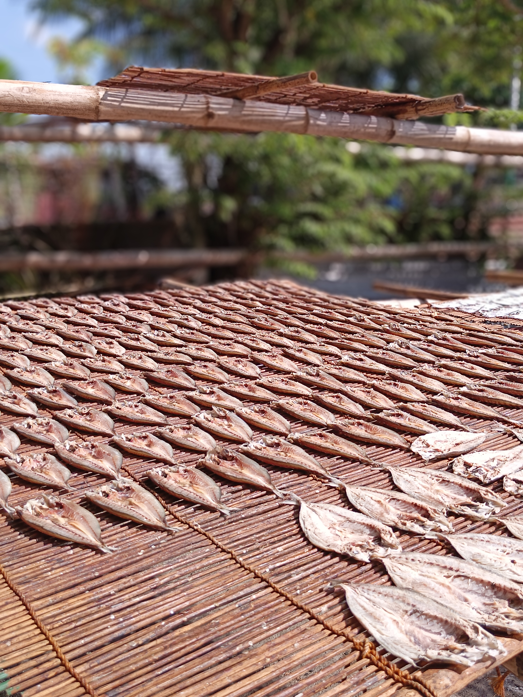

TINAPAngarap
na Buhay
Isang coffee table book tungkol sa Tinapang Salinas ng Rosario, Cavite, at sa mga taong nagpapausok nito.

Isang coffee table book tungkol sa Tinapang Salinas ng Rosario, Cavite, at sa mga taong nagpapausok nito.
Nakatuon ang pag-aaral sa Tinapang Salinas bilang mahalagang bahagi ng kabuhayan at pagkakakilanlan ng komunidad ng Rosario, Cavite. Susuriin nito ang kasalukuyang kalagayan ng mga gumagawa at nagtitinda ng tinapa, ang mga suliraning kinahaharap ng industriya tulad ng polusyon at pagkawala ng mga pagawaan, at kung paano mapapanatili ang kabuhayan at tradisyong nakaugnay rito.
Matagal nang bahagi ng kabuhayan at pagkakakilanlan ng Rosario ang tinapa, na kilala bilang pangunahing pagawaan ng tinapa sa buong Pilipinas. Ngunit ayon sa nakalap na impormasyon ng pangkat, nahaharap ngayon sa mga suliranin ang paggawa at pagbebenta nito, kabilang ang pagtatambak ng dumi sa pinagkukunan ng isda at unti-unting pagkawala ng mga pagawaan.
Kaya nais naming alamin ang kalagayan ng mga gumagawa at nagtitinda ng tinapa, at kung paano naapektuhan ng mga suliraning ito ang kanilang kabuhayan. Layunin naming itala at ipakita ang kanilang karanasan, at ipabatid sa mas nakararami ang kahalagahan ng pagpapanatili ng industriya ng tinapa sa Rosario.

Mahalaga na ang Cavite sa kalakalan bago pa dumating ang mga Espanyol dahil sa lokasyon nito sa Look ng Maynila. Naging daungan ito at sentro ng kalakalan at depensa, at bahagi ng paggawa ng mga galeon at kalakalan ng Maynila at Acapulco noong panahon ng Galleon Trade.
Dahil sa baybaying lokasyon at yamang-dagat, umunlad ang mga pamayanang nakadepende sa pangingisda at mga produktong-dagat. Kabilang sa mga tradisyong nabuo ang paggawa ng tinapa, na naipapasa sa mga pamilya at susunod na henerasyon at patuloy na kinikilala sa mga pagdiriwang tulad ng Tinapa Festival.
Ang Pangkat Dalawa ng Filipinolohiya ang nasa likod ng proyekto.
Magsisilbi ang pag-aaral na tulay upang mailapit sa LGU ang problema ng lugar at mabigyan ito ng solusyon. Makatutulong din ito sa muling pagbabalik at pagpapasigla ng kabuhayang nawala dahil sa problema sa basura.
Higit sa lahat, mapapangalagaan nito ang tradisyon at kultura ng barangay upang maipasa at mapalago para sa mga susunod na henerasyon.
